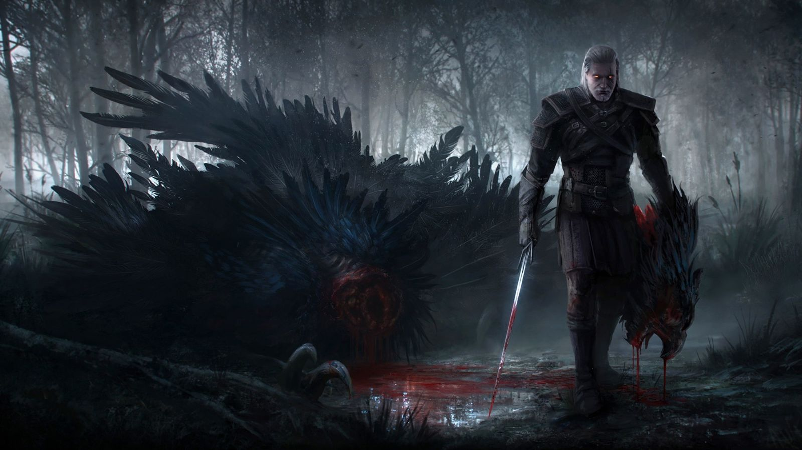
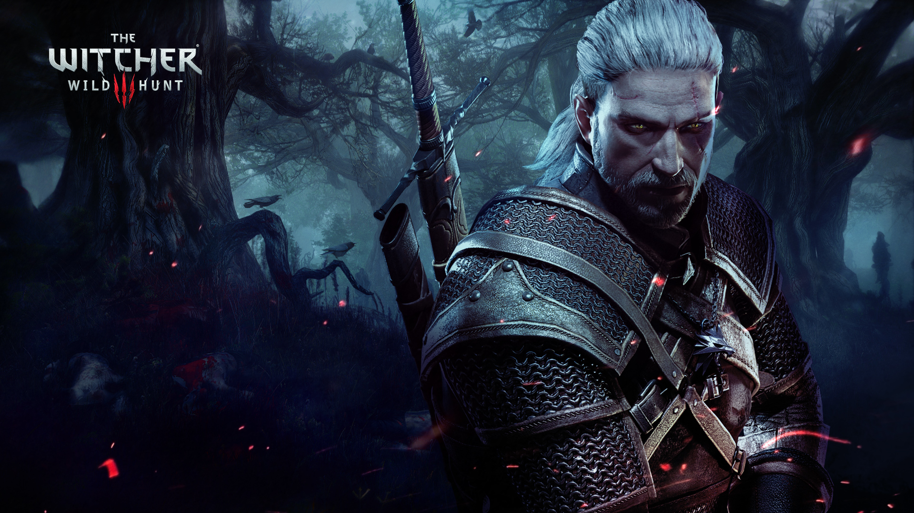
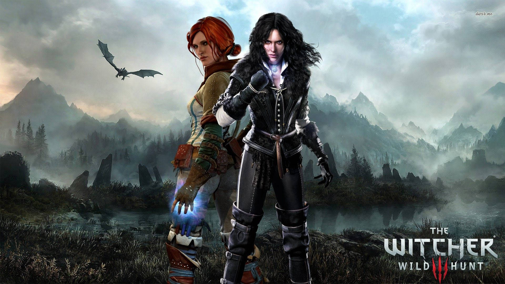
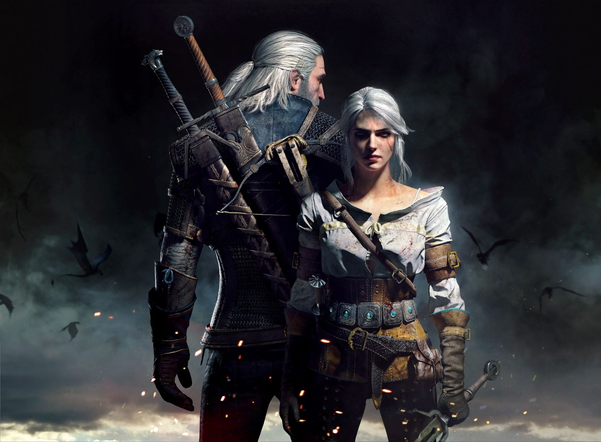
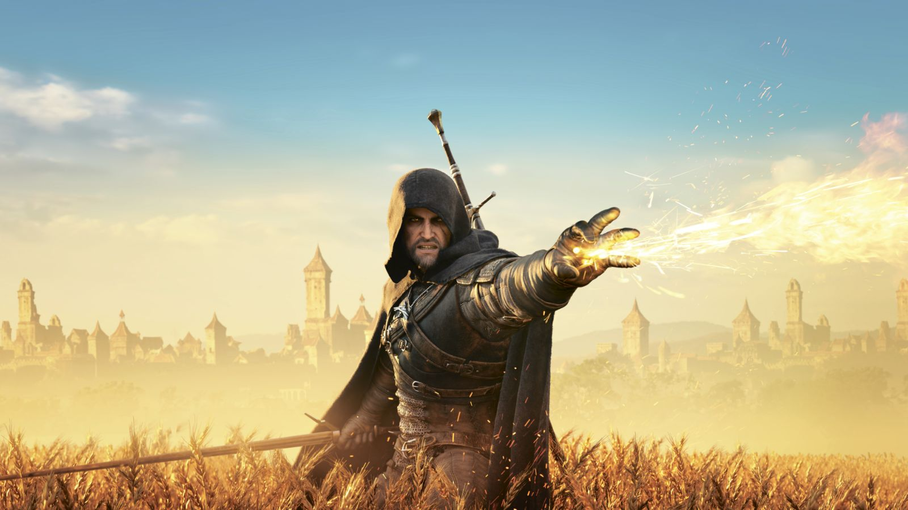
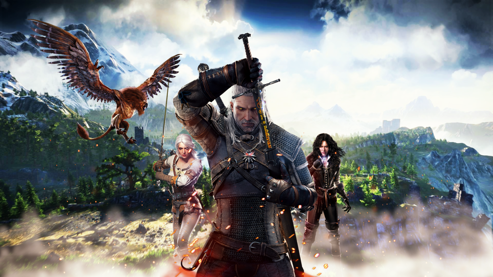

O hře
Zaklínač 3 úspěšně navazuje na předcházející díly a hráčům opět nabídne propracovaný a napínavý příběh. Kromě zápletky se však tvůrci rozhodli obohatit hru o další razantní vylepšení a jedním z nich je gigantický otevřený svět. Herní mapa je tak rozlehlá, že pouhé odemknutí všech oblastí vám postupným plněním úkolů zabere přinejmenším 60 hodin. Ve hře se navíc nachází nespočet prvků, které vám hraní ozvláštní a celkový herní čas zase o trochu prodlouží. Systém přidělování dovednostních bodů, hledání vzácných surovin, přijímání nejrůznějších podúkolů, prodávání a kupování všemožných zbraní, lektvarů, brnění, mastiček, pochutin atd. U této hry se zkrátka nudit nebudete!
{kind=link}
Pro herní sérii Zaklínač je typický chytlavý příběh inspirovaný povídkami polského autora Andrzeje Sapkowského. Tento trend se ani tentokrát nemění a právě hry, jako je Zaklínač, jsou skvělým důkazem toho, že singleplayer má i v dnešní době na herním trhu své místo. Tak velké množství vedlejších úkolů a mimopříběhových aktivit budete u jakéhokoli konkurenčního titulu hledat jen těžko.
Otevřený svět ve spojení s všudypřítomnými vedlejšími úkoly a ukrytými poklady nabízí jen těžce představitelnou plochu k prozkoumání. Ať už se tedy ve hře vydáte jakýmkoli směrem, buďte si jisti, že vás nečeká jen poklidná procházka lesem.
{kind=link}
Jakožto Zaklínač budete dozajista plnit množství vedlejších úkolů, které vám zajistí nějaký ten zlaťák na přilepšenou. Všechny úkoly však nejsou jen procházka růžovou zahradou a vřele vám bude doporučeno se důkladně připravit na možné nebezpečí. Tato příprava sestává z prozkoumání bestiáře a zjištění slabin nepřítele. Dále je například doporučena alespoň částečná úprava vybavení a výzbroje na míru danému úkolu a nepříteli.
Dalším skvělým prvkem hry je možnost výroby široké škály elixírů, olejů na zbraně, výbušnin, dokonce také kusů brnění a zbraní. Stačí tak sbírat potřebné suroviny a místo utrácení těžce vydělaných zlaťáků si můžete velké množství produktů vyrobit sami.
Zaklínač 3 se netají tím, že je hardwarově náročnější. Tento fakt má však své jasné opodstatnění. Hra nabídne vynikající grafické zpracování, a to včetně množství drobných detailů, které jsou často rozhodujícím faktorem celkového dojmu ze hry. Dokonalému zážitku napomůže také tematický hudební doprovod.
{kind=link}
Tato verze obsahuje základní hru Zaklínač III: Divoký hon; datadisk Zaklínač III: Divoký hon - Srdce z kamene; datadisk Zaklínač III: Divoký hon - O víně a krvi; všech 16 DLC a všechny dosavadní aktualizace.
{kind=link}
CD Project
CD Projekt (též také CD Projekt Group) je polská vydavatelská, obchodní a vývojářská společnost, působící na poli videoherního průmyslu, která byla založena roku 1994 Marcinem Iwińskim a Michałem Kicińskim. V současné době má hlavní sídlo ve městě Varšava v Polsku.
Společnost se proslavila především svojí herní sérií Zaklínač (v originále Wiedźmin, v angličtině The Witcher), kterou vyvíjí herní studio CD Projekt RED na motivy stejnojmenné knižní série polského spisovatele Andrzeje Sapkowského.
{kind=link}
O dva roky později, v roce 1996, došlo ke změně názvu na CD Projekt, která jako první společnost na polském trhu začala vydávat videohry s polskou lokalizací. Mezi její první významné milníky patří vydání populární počítačové hry Baldur's Gate v kompletní polské lokalizaci, včetně dabingu, na kterém se mimo jiné podíleli i herci Piotr Fronczewski a Wiktor Zborowski. Vydání hry bylo tak úspěšné, že CD Projekt začaly volit i další firmy coby svého distributora na polské půdě, mezi nimi např. Atari, Konami, Sega či Ubisoft.
Roku 2002 založil CD Projekt svoje herní studio, pojmenované CD Projekt RED, které o rok nato začalo pracovat na dnes velmi populární RPG sérii na motivy knih Andrzeje Sapkowského, Zaklínač (v originále Wiedźmin, anglicky The Witcher). Hra vyšla o 4 roky později, v roce 2007, a dočkala se masového úspěchu, díky kterému se začalo pracovat na pokračování nově vzniklé herní série. V roce 2011 tak vyšla hra Zaklínač 2: Vrahové králů (The Witcher 2: Assassins of Kings) a poté v roce 2015 Zaklínač 3: Divoký hon (The Witcher 3: Wild Hunt).
V roce 2008 učinilo CD Projekt další významný krok, a sice spuštění portálu GOG.com (Good Old Games), který vydává hry staršího data spustitelné na nových operačních systémech a strojích, stejně jako data novějšího, a to bez DRM ochrany. GOG.com v první polovině roku 2015 spustil betaverzi svého vlastního herního klienta, GOG Galaxy.
{kind=link}